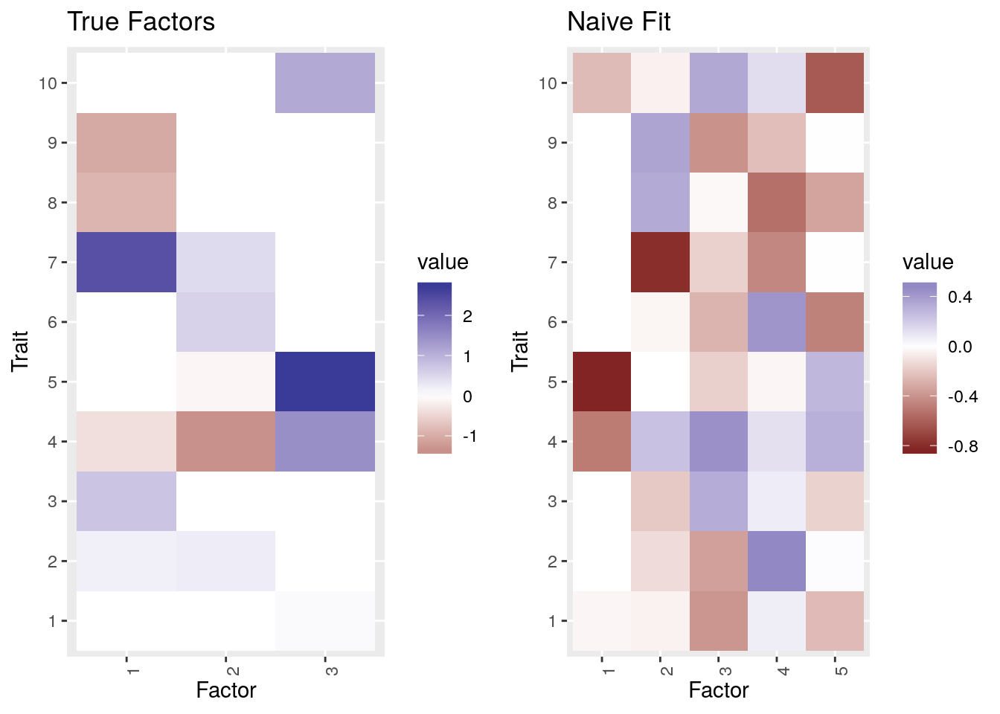
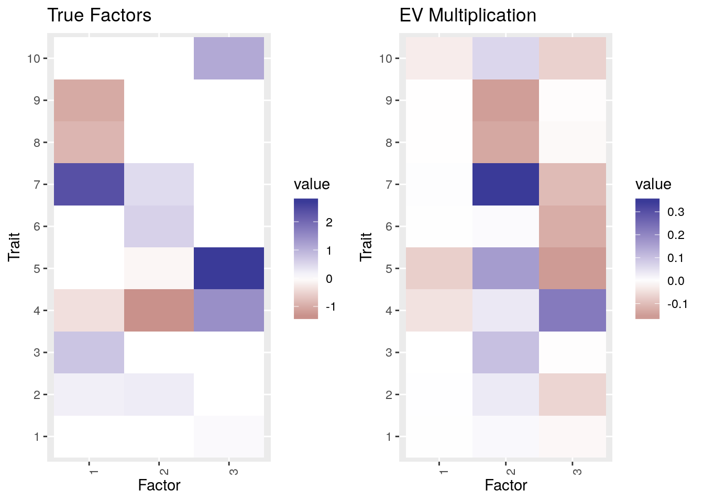
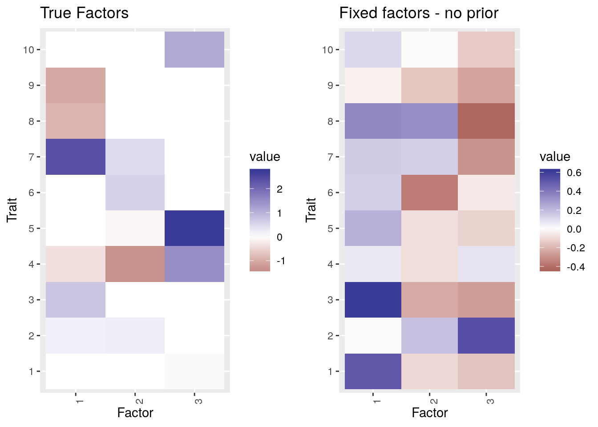

Correcting for sample overlap. Part 2
Jean Morrison
2020-03-27
Last updated: 2020-03-29
Checks: 6 1
Knit directory: sumstatFactors/
This reproducible R Markdown analysis was created with workflowr (version 1.4.0.9000). The Checks tab describes the reproducibility checks that were applied when the results were created. The Past versions tab lists the development history.
The R Markdown is untracked by Git. To know which version of the R Markdown file created these results, you’ll want to first commit it to the Git repo. If you’re still working on the analysis, you can ignore this warning. When you’re finished, you can run wflow_publish to commit the R Markdown file and build the HTML.
Great job! The global environment was empty. Objects defined in the global environment can affect the analysis in your R Markdown file in unknown ways. For reproduciblity it’s best to always run the code in an empty environment.
The command set.seed(20190819) was run prior to running the code in the R Markdown file. Setting a seed ensures that any results that rely on randomness, e.g. subsampling or permutations, are reproducible.
Great job! Recording the operating system, R version, and package versions is critical for reproducibility.
Nice! There were no cached chunks for this analysis, so you can be confident that you successfully produced the results during this run.
Great job! Using relative paths to the files within your workflowr project makes it easier to run your code on other machines.
Great! You are using Git for version control. Tracking code development and connecting the code version to the results is critical for reproducibility. The version displayed above was the version of the Git repository at the time these results were generated.
Note that you need to be careful to ensure that all relevant files for the analysis have been committed to Git prior to generating the results (you can use wflow_publish or wflow_git_commit). workflowr only checks the R Markdown file, but you know if there are other scripts or data files that it depends on. Below is the status of the Git repository when the results were generated:
Ignored files:
Ignored: .Rhistory
Ignored: .Rproj.user/
Ignored: analysis/fixed_factors_cache/
Ignored: analysis/metabo_flash_experiments_cache/
Ignored: analysis/pathway_factors_cache/
Ignored: analysis/simulations_cache/
Untracked files:
Untracked: R/run_flashier2.R
Untracked: analysis/genetic_correlation.Rmd
Untracked: analysis/sample_corr2.Rmd
Untracked: buttons.css
Untracked: code/flashier_compare.R
Untracked: code/flashier_compare_jason.R
Untracked: code/hide_output.js
Untracked: code/mask_flashier.R
Untracked: code/mask_flashr.R
Untracked: k99_analysis.R
Untracked: k99_fit.RDS
Unstaged changes:
Modified: R/plot_factors.R
Modified: README.md
Modified: analysis/simulations2.rmd
Note that any generated files, e.g. HTML, png, CSS, etc., are not included in this status report because it is ok for generated content to have uncommitted changes.
There are no past versions. Publish this analysis with wflow_publish() to start tracking its development.
Introduction
This is an alternative method for correcting for correlation in summary statistics due to sample overlap. Previously I looked at the method of premultiplying by the eigenvectors of \(R\), the trait correlation which can be estimated from variants that are not associated with any trait. This alternative strategy is to decompose the error matrix into fixed factors. This strategy is based on ideas from Matthew and Jason here. For this discussion I will transpose everything from previous notation to match with Jason’s formulation of the problem and assume that the \(z\)-scores have the same low rank structure as the effects (discussed previously).
We have
\[ \hat{Z}^{T}_{M\times J} = F_{M\times K}L_{J \times K}^{T} + \Theta_{M\times J} + E_{M\times J} \]
The columns of \(E\) are distributed \(E_{\cdot j} \sim N(0, R)\) and are independent of each other. Let \(\lambda_{min}\) be the smallest eigenvalue of \(R\) and let \(W = R - \lambda_{min}I\). Let \(v_1, \dots, v_M\) be eigenvectors of \(W\) and \(a_1, \dots, a_M\) eigenvalues of \(W\). Then we can decompose \(E\) as
\[ E = \sum_{k=1}^n v_k t_k^T + E^{\prime} \] where the elemens of \(E^{\prime}\) are iid \(E^{\prime}_{ij} \sim N(0, \lambda_{min})\) ant \(t_k\) are \(J\times 1\) vectors with iid elements \(t_ki \sim N(0, a_k)\).
This means that we can fit the model by including \(M\) fixed factors \(v_1, \dots, v_M\) and specifying the prior for the associated loadings.
Fitting the model using flashier
Fitting this arrangement using flashier is possible but slightly involved. On March 27, 2020 I think the procedure will be
flash.init(Z, S = matrix(lambda_min, nrow=M, ncol=J), var.type = 1) %>%
flash.init.factors(., EF = list(v1, t1), prior.family = prior.normal(g_init=g1, fixg=TRUE)) %>%
# one of these lines for each eigenvecotr (M lines)
flash.fix.loadings(., kset = 1:M, mode=1) %>%
flash.backfit() %>%
flash.add.greedy(Kmax = 100, init.fn ) %>%
flash.backfit()We will try with a previous example.
library(flashier)
library(sumstatFactors)
library(tidyverse)
library(reshape2)
library(gridExtra)
library(ashr)set.seed(1)
nvar <- 1000
ntrait <- 10
nfactor <- 3
S <- matrix(1, nrow=nvar, ncol=ntrait)
rloadings <- function(n){
sigma_1 <- 1
p <- 0.5
load_dist <- ashr::normalmix(pi=c(1-p, p), mean=rep(0, 2), sd=c(0, sigma_1))
return(causeSims::rnormalmix(n, load_dist))
}
rfactors <- function(n){
sigma_1 <- 1
p <- 0.5
fact_dist <- ashr::normalmix(pi=c(1-p, p), mean=rep(0, 2), sd=c(0, sigma_1))
return(causeSims::rnormalmix(n, fact_dist))
}
true_L <- replicate(n=nfactor, rloadings(nvar))
true_F <- replicate(n=nfactor, rfactors(ntrait))
true_Theta <- matrix(0, nrow=nvar, ncol=ntrait)
## Generate random correlation matrix
A <- matrix(rnorm(n=ntrait*ntrait), nrow=ntrait)
B <- A%*%t(A)
R <- cov2cor(B)
true_B = true_L%*%t(true_F)
mats <- sim_bh2(true_L, true_F, true_Theta, S, R)### Plot the factors
ptrue <- plot_factors(true_F, 1:10)+ ggtitle("True Factors")
ptrue 
First I fit with no correction. I will use the soft impute initialization.
fit_naive <- flash.init(t(mats$beta_hat), S = matrix(1, nrow=ntrait, ncol=nvar), var.type = 1) %>%
flash.add.greedy(., Kmax = 100, init.fn = init.fn.softImpute) %>%
flash.backfit(.)Adding factor 1 to flash object...
Adding factor 2 to flash object...
Adding factor 3 to flash object...
Adding factor 4 to flash object...
Adding factor 5 to flash object...
Adding factor 6 to flash object...
Factor doesn't significantly increase objective and won't be added.
Wrapping up...
Done.
Backfitting 5 factors (tolerance: 1.49e-04)...
Difference between iterations is within 1.0e+01...
Difference between iterations is within 1.0e+00...
Difference between iterations is within 1.0e-01...
Difference between iterations is within 1.0e-02...
Difference between iterations is within 1.0e-03...
Difference between iterations is within 1.0e-04...
Wrapping up...
Done.p2 <- plot_factors(fit_naive$loadings.pm[[1]], 1:10) + ggtitle("Naive Fit")
grid.arrange(ptrue, p2, ncol=2)
rrmse(Bhat = fitted(fit_naive), B = t(true_B))[1] 0.5732931cor(fit_naive$loadings.pm[[1]], true_F) [,1] [,2] [,3]
[1,] 0.14309562 0.543424643 -0.99286622
[2,] -0.98615795 -0.483973169 0.16799634
[3,] 0.04166582 -0.599882627 0.32970295
[4,] -0.08557291 -0.003429673 0.07804117
[5,] 0.06706633 -0.521971086 0.45612519Now using the multiplying by eigenvectors method (since everything is transposed it is now premultiplying)
R_eig <- eigen(R)
U <- R_eig$vectors %*% diag(1/sqrt(R_eig$values))
Z_tilde <- mats$beta_hat %*% U
fit_corrected <- flash.init(t(Z_tilde), S = matrix(1, nrow=ntrait, ncol=nvar), var.type = 1) %>%
flash.add.greedy(., Kmax = 100, init.fn = init.fn.softImpute) %>%
flash.backfit(.)Adding factor 1 to flash object...
Adding factor 2 to flash object...
Adding factor 3 to flash object...
Adding factor 4 to flash object...
Factor doesn't significantly increase objective and won't be added.
Wrapping up...
Done.
Backfitting 3 factors (tolerance: 1.49e-04)...
Difference between iterations is within 1.0e+01...
Difference between iterations is within 1.0e+00...
Difference between iterations is within 1.0e-01...
Difference between iterations is within 1.0e-02...
Difference between iterations is within 1.0e-03...
Difference between iterations is within 1.0e-04...
Wrapping up...
Done.p3 <- plot_factors(t(solve(U))%*%fit_corrected$loadings.pm[[1]], 1:10) + ggtitle("EV Multiplication")
grid.arrange(ptrue, p3, ncol=2)
rrmse(Bhat = t(fitted(fit_corrected))%*%solve(U), B = true_B)[1] 0.1350924cor(t(solve(U))%*%fit_corrected$loadings.pm[[1]], true_F) [,1] [,2] [,3]
[1,] 0.1826613 0.5497397 -0.997435285
[2,] 0.9184054 0.1669362 0.263911300
[3,] -0.3356714 -0.8682653 0.004574033Now using the fixed factors strategy:
Z <- t(mats$beta_hat)
lambda_min <- min(eigen(R)$values)
W <- R - lambda_min*diag(rep(1, ntrait))
eigW <- eigen(W)
V <- eigW$vectors[, -10] #we can remove the last one because the evalue is 0
Tinit <- t(V) %*% Z %>% t() #just solve ans start with that solution
a <- eigW$values[-10]
if(FALSE){
fit_corrected2 <- flash.init(Z, S = matrix(lambda_min, nrow=ntrait, ncol=nvar), var.type = 1) %>%
flash.init.factors(., EF = list(V[,1, drop=F], Tinit[,1, drop=F]), prior.family = prior.normal(g_init=normalmix(1, 0, a[1]), fix_g=TRUE)) %>%
flash.init.factors(., EF = list(V[,2, drop=F], Tinit[,2, drop=F]), prior.family = prior.normal(g_init=normalmix(1, 0, a[2]), fix_g=TRUE)) %>%
flash.init.factors(., EF = list(V[,3, drop=F], Tinit[,3, drop=F]), prior.family = prior.normal(g_init=normalmix(1, 0, a[3]), fix_g=TRUE)) %>%
flash.init.factors(., EF = list(V[,4, drop=F], Tinit[,4, drop=F]), prior.family = prior.normal(g_init=normalmix(1, 0, a[4]), fix_g=TRUE)) %>%
flash.init.factors(., EF = list(V[,5, drop=F], Tinit[,5, drop=F]), prior.family = prior.normal(g_init=normalmix(1, 0, a[5]), fix_g=TRUE)) %>%
flash.init.factors(., EF = list(V[,6, drop=F], Tinit[,6, drop=F]), prior.family = prior.normal(g_init=normalmix(1, 0, a[6]), fix_g=TRUE)) %>%
flash.init.factors(., EF = list(V[,7, drop=F], Tinit[,7, drop=F]), prior.family = prior.normal(g_init=normalmix(1, 0, a[7]), fix_g=TRUE)) %>%
flash.init.factors(., EF = list(V[,8, drop=F], Tinit[,8, drop=F]), prior.family = prior.normal(g_init=normalmix(1, 0, a[8]), fix_g=TRUE)) %>%
flash.init.factors(., EF = list(V[,9, drop=F], Tinit[,9, drop=F]), prior.family = prior.normal(g_init=normalmix(1, 0, a[9]), fix_g=TRUE)) %>%
# one of these lines for each eigenvecotr (M lines)
flash.fix.loadings(., kset = 1:9, mode=1) %>%
flash.backfit(warmstart=FALSE) %>%
flash.add.greedy(Kmax = 100, init.fn = init.fn.softImpute ) %>%
flash.backfit()
}
#Without specifying prior for loadings for fixed factors
fit_corrected3 <- flash.init(Z, S = matrix(lambda_min, nrow=ntrait, ncol=nvar), var.type = 1) %>%
flash.init.factors(., EF = list(V[,1, drop=F], Tinit[,1, drop=F])) %>%
flash.init.factors(., EF = list(V[,2, drop=F], Tinit[,2, drop=F])) %>%
flash.init.factors(., EF = list(V[,3, drop=F], Tinit[,3, drop=F])) %>%
flash.init.factors(., EF = list(V[,4, drop=F], Tinit[,4, drop=F])) %>%
flash.init.factors(., EF = list(V[,5, drop=F], Tinit[,5, drop=F])) %>%
flash.init.factors(., EF = list(V[,6, drop=F], Tinit[,6, drop=F])) %>%
flash.init.factors(., EF = list(V[,7, drop=F], Tinit[,7, drop=F])) %>%
flash.init.factors(., EF = list(V[,8, drop=F], Tinit[,8, drop=F])) %>%
flash.init.factors(., EF = list(V[,9, drop=F], Tinit[,9, drop=F])) %>%
# one of these lines for each eigenvecotr (M lines)
flash.fix.loadings(., kset = 1:9, mode=1) %>%
flash.backfit() %>%
flash.add.greedy(Kmax = 100, init.fn = init.fn.softImpute ) %>%
flash.backfit()Backfitting 9 factors (tolerance: 1.49e-04)...
Difference between iterations is within 1.0e+03...
Difference between iterations is within 1.0e+02...
Difference between iterations is within 1.0e+01...
Difference between iterations is within 1.0e+00...
Difference between iterations is within 1.0e-01...
Difference between iterations is within 1.0e-02...
Difference between iterations is within 1.0e-03...
Wrapping up...
Done.
Adding factor 10 to flash object...
Adding factor 11 to flash object...
Adding factor 12 to flash object...
Adding factor 13 to flash object...
Factor doesn't significantly increase objective and won't be added.
Wrapping up...
Done.
Backfitting 12 factors (tolerance: 1.49e-04)...
Difference between iterations is within 1.0e+02...
Difference between iterations is within 1.0e+01...
Difference between iterations is within 1.0e+00...
Difference between iterations is within 1.0e-01...
Difference between iterations is within 1.0e-02...
Difference between iterations is within 1.0e-03...
Difference between iterations is within 1.0e-04...
Wrapping up...
Done.p5 <- plot_factors(t(solve(U))%*%fit_corrected3$loadings.pm[[1]][,-(1:9)], 1:10) + ggtitle("Fixed factors - no prior")
grid.arrange(ptrue, p5, ncol=2)
rrmse(Bhat = t(fitted(fit_corrected3)), B = true_B)[1] 0.7834932cor(fit_corrected3$loadings.pm[[1]][,-(1:9)], true_F) [,1] [,2] [,3]
[1,] 0.1540197 0.5112215 -0.9957977
[2,] -0.9954065 -0.4419390 0.1812250
[3,] -0.3953961 -0.4782681 0.4002212
sessionInfo()R version 3.6.2 (2019-12-12)
Platform: x86_64-pc-linux-gnu (64-bit)
Running under: Ubuntu 18.04.4 LTS
Matrix products: default
BLAS: /usr/lib/x86_64-linux-gnu/openblas/libblas.so.3
LAPACK: /usr/lib/x86_64-linux-gnu/libopenblasp-r0.2.20.so
locale:
[1] LC_CTYPE=en_US.UTF-8 LC_NUMERIC=C
[3] LC_TIME=en_US.UTF-8 LC_COLLATE=en_US.UTF-8
[5] LC_MONETARY=en_US.UTF-8 LC_MESSAGES=en_US.UTF-8
[7] LC_PAPER=en_US.UTF-8 LC_NAME=C
[9] LC_ADDRESS=C LC_TELEPHONE=C
[11] LC_MEASUREMENT=en_US.UTF-8 LC_IDENTIFICATION=C
attached base packages:
[1] stats graphics grDevices utils datasets methods base
other attached packages:
[1] ashr_2.2-39 gridExtra_2.3
[3] reshape2_1.4.3 forcats_0.4.0
[5] stringr_1.4.0 dplyr_0.8.3
[7] purrr_0.3.3 readr_1.3.1
[9] tidyr_1.0.0 tibble_2.1.3
[11] ggplot2_3.2.1 tidyverse_1.2.1
[13] sumstatFactors_0.0.0.9000 flashier_0.2.4
loaded via a namespace (and not attached):
[1] colorspace_1.4-1 rjson_0.2.20
[3] rprojroot_1.3-2 fs_1.3.1
[5] rstudioapi_0.10 listenv_0.7.0
[7] furrr_0.1.0 farver_2.0.1
[9] fansi_0.4.0 lubridate_1.7.4
[11] xml2_1.2.2 codetools_0.2-16
[13] splines_3.6.2 pscl_1.5.2
[15] doParallel_1.0.15 robustbase_0.93-5
[17] knitr_1.24 zeallot_0.1.0
[19] jsonlite_1.6 workflowr_1.4.0.9000
[21] broom_0.5.2 flashr_0.6-6
[23] compiler_3.6.2 httr_1.4.1
[25] backports_1.1.5 assertthat_0.2.1
[27] RcppZiggurat_0.1.5 Matrix_1.2-17
[29] lazyeval_0.2.2 survey_3.36
[31] cli_2.0.0 iterpc_0.4.1
[33] htmltools_0.3.6 tools_3.6.2
[35] gmp_0.5-13.5 gtable_0.3.0
[37] glue_1.3.1 Rcpp_1.0.3
[39] softImpute_1.4 cellranger_1.1.0
[41] vctrs_0.2.0 arrangements_1.1.5
[43] nlme_3.1-141 iterators_1.0.12
[45] xfun_0.9 globals_0.12.4
[47] rvest_0.3.4 lifecycle_0.1.0
[49] future_1.14.0 DEoptimR_1.0-8
[51] MASS_7.3-51.4 scales_1.1.0
[53] hms_0.5.2 causeSims_0.1.0
[55] parallel_3.6.2 yaml_2.2.0
[57] loo_2.1.0 stringi_1.4.3
[59] SQUAREM_2017.10-1 cause_0.3.0.0240
[61] foreach_1.4.7 RMySQL_0.10.17
[63] truncnorm_1.0-8 intervals_0.15.1
[65] rlang_0.4.2 pkgconfig_2.0.3
[67] matrixStats_0.55.0 ebnm_0.1-24
[69] evaluate_0.14 lattice_0.20-38
[71] htmlwidgets_1.3 labeling_0.3
[73] tidyselect_0.2.5 plyr_1.8.5
[75] magrittr_1.5 R6_2.4.1
[77] gsmr_1.0.9 generics_0.0.2
[79] DBI_1.0.0 pillar_1.4.2
[81] haven_2.1.1 withr_2.1.2
[83] survival_2.44-1.1 mixsqp_0.3-6
[85] modelr_0.1.5 crayon_1.3.4
[87] MRPRESSO_1.0 plotly_4.9.0
[89] rmarkdown_1.15 grid_3.6.2
[91] readxl_1.3.1 data.table_1.12.2
[93] MendelianRandomization_0.4.1 git2r_0.26.1
[95] digest_0.6.23 numDeriv_2016.8-1.1
[97] RcppParallel_4.4.4 munsell_0.5.0
[99] viridisLite_0.3.0 mitools_2.4